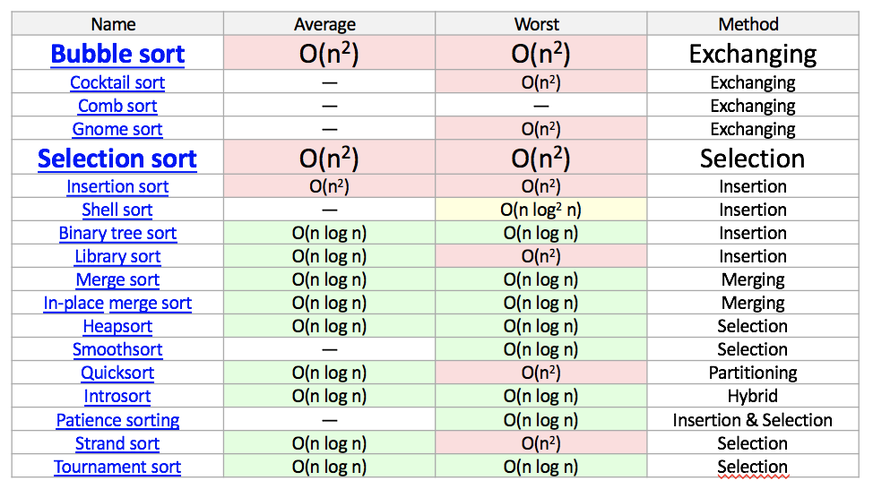
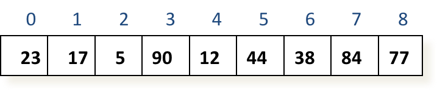
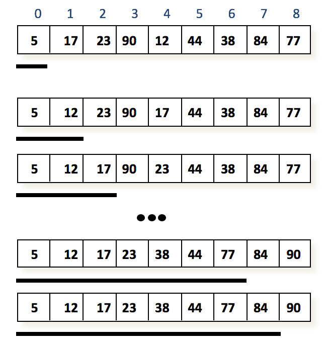
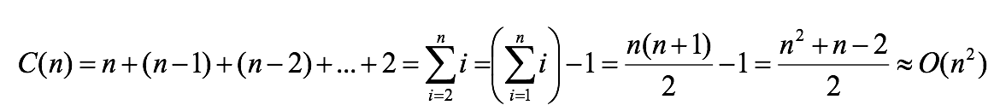
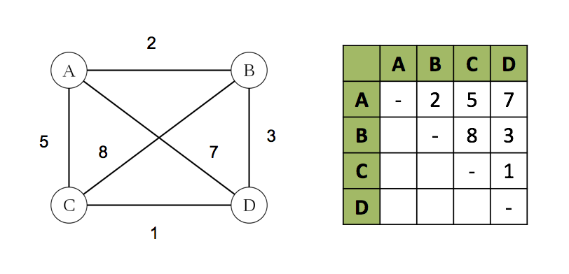
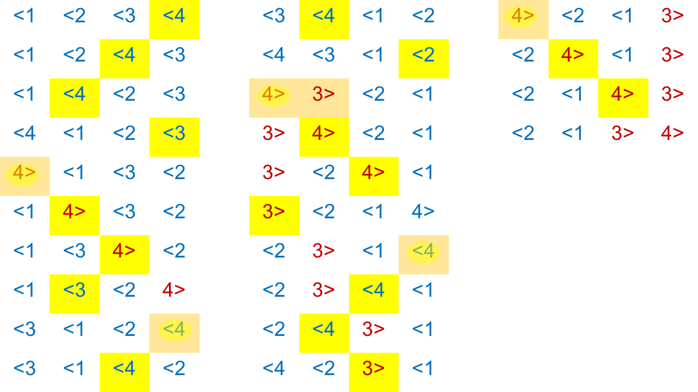
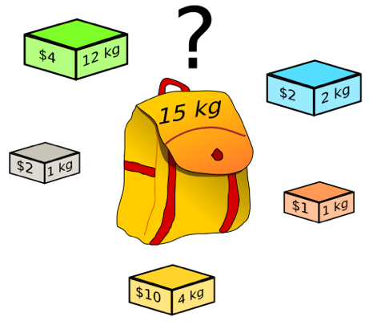
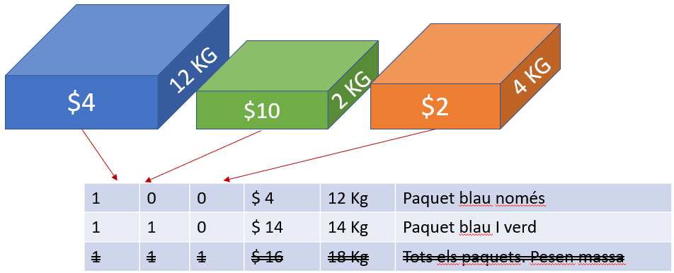

class: center, middle <center><img src="images/ub.png" width="150"></center> # **ALGORÍSMICA** ## Algorismes i força bruta Jordi Vitrià, Mireia Ribera .blue[jordi.vitria@ub.edu] | .blue[ribera@ub.edu] --- ## Força Bruta Diem que un algorisme està basat en la **força bruta** si implementa la solució a un problema basant-se directament en la definició del problema i en la definició dels conceptes involucrats, sense cap mena d'optimització. Exemples: + Calcular `a^n mod m`, per (`a > 0`, `n >= 0`), calculant primer `a^n` i després passant aquest resultat a `mod n`. Ja hem vist que hi havia millors maneres de fer-ho! + Calcular `n!` com `n * (n-1) * ... * 1`. En aquest cas no sabem fer-ho millor. + Multiplicar dues matrius `X` i `Y` aplicant la definició de multiplicació de matrius: ```python for i in range(len(X)): for j in range(len(Y[0])): for k in range(len(Y)): result[i][j] += X[i][k] * Y[k][j] ``` --- ## El problema de l'ordenació d'una llista Ordenar és una de les operacions més repetides per qualsevol ordinador! + Ordenar una llista de persones. + Ordenar els registres d’una base de dades per data. + Ordenar les factures per import. + Ordenar pàgines web a un cercador. + Ordenar productes en un recomanador. + Etc. És més, ordenar és un pas previ per moltes altres operacions computacionals! Hi ha molts algorismes d’ordenació. Anem a veure’n un basat en la força bruta. --- ## Algorismes d'ordenació d'una llista <center></center> --- name:sel ## Ordenació per selecció L'algorisme d’ordenació per selecció segueix l'analogia d'ordenació ingènua d'una baralla de cartes: + Recorrem la llista `A` per trobar l’element més petit i el canviem pel primer element. + Llavors, començant pel segon element, mirem els elements que queden a la dreta i busquem el menor, que canviem pel segon. + En general, al pas `i` (`0 <= i <= n-2`), busquem l’element més petit a `A[i+1..n-1]` i el canviem per `A[i]`. <center></center> --- ## Ordenació per selecció <center></center> --- ### Ordenació per selecció ```python def selection_sort(l): for i in range(0, len(l)-1): min = i for j in range(i + 1, len(l)): if l[j] < l[min]: min = j l[i],l[min]=l[min],l[i] ``` L’operació més important és una comparació: `if l[j] < l[min]: min = j` I el nombre de vegades que s’executa és: <center></center> Evidentment l’algorisme és **quadràtic**, `O(n^2)`, tot i que **només fem `O(n)` intercanvis** a la llista. --- ## Avís Important > .bold[L’ordenació per selecció no és un bon mètode d’ordenació perquè hi ha altres algorismes de complexitat `O(n log n)`, tal com hem vista a la taula anterior.] > .bold[No useu mai un algorisme `O(n^2)` per ordenar (bubble sort, insertion sort, ...). Aquí només els veiem com a exemple algorísmic, no perque siguin útils.] --- ## Conceptes Algorísmics Hi ha molts problemes computacionals que s’han demostrat **intractables**. La **intractabilitat** pot ser de dos tipus: + Cas fort: **S’ha demostrat que no existeix un algorisme** per resoldre el problema (p.e. la [indecidibilitat de l’aturada d’un programa](https://ca.wikipedia.org/wiki/Problema_de_la_parada)). + Cas dèbil: **No es coneix cap algorisme eficient** per resoldre el problema (p.e. la factorització de nombres enters grans) i per tant no sóm capaços de trobar-ne la solució. Normalment s'enten que un algorisme *eficient* ha de ser com a màxim de tipus polinòmic. -- Quan no hi ha cap algorisme eficient per resoldre un problema sovint ens enfrontem a un problema de cerca per força bruta: **enumerar totes les solucions i trobar la millor**. Una forma d’afrontar la intractabilitat són els **algorismes aproximats**: algorismes que poden trobar amb alta probabilitat una *bona* solució del problema però que no ens poden mai assegurar que sigui la millor. --- ## Cerca per força bruta La **cerca per força bruta** (o cerca exhaustiva) consisteix en una exploració sistemàtica de l’espai de solucions possibles a un problema donat. Pot dividir-se en varies parts: + generar totes les possibles solucions, + seleccionar les que compleixen unes determinades restriccions (si és necessari), + triar la millor. La resolució de problemes per cerca exhaustiva sol comportar l’exploració d’espais molt grans de solucions, per la qual cosa resulta pràctica només per a instàncies petites del problema. --- ## El problema del viatjant de comerç com a problema intractable El problema del viatjant de comerç que varem veure a l'inici del curs no té una **solució exacta** més eficient que la cerca exhaustiva: no es coneix cap algorisme exacte en temps polinòmic. És un problema NP. Aquest problema es presenta en moltes aplicacions pràctiques, per exemple en la planificació d'un viatge, en logística o en el disseny del microxips. Encara apareix més freqüentment com a subproblema, per exemple en el problema de la distribució de mercaderies, en el problema de la planificació de la ruta per donar servei als clients o en la seqüenciació del genoma. --- ## Modelitzant el problema del viatjant de comerç El problema del viatjant de comerç es pot modelitzar amb l'ajuda d'un graf utilitzant els vèrtex i les arestes. Les ciutats estan representades pels vèrtexs `v_1,...,v_n` i les carreteres entre les ciutats per les arestes `a_ij` entre dos vèrtexs `v_i` i `v_j`. Cada aresta `a_ij` té una determinada longitud que, depenent del context, significa la longitud geogràfica d'una connexió, el temps emprat en el recorregut o les despeses de viatge. <center></center> --- ## Pas a de la cerca exhaustiva: trobar les rutes pel viatjant de comerç. Una ruta (també coneguda com **circuit hamiltonià**) és un circuit que passa per tots els vèrtexs i en el que cada vèrtex surt exactament una vegada. Farem una petita trampa, i la ruta tornarà a passar pel vèrtex inicial, ja que el punt de sortida ha de ser el mateix que el d'arribada. L'objectiu és trobar la ruta més curta possible. --- ## Generar les rutes = Crear permutacions de ciutats Generar totes les possibles rutes és el mateix que generar **totes les possibles permutacions** dels vèrtexs del mig. Recordeu que el nombre de permutacions de `n` elements és `n!`. <center><img src="images/cerca2.png" width="200"></center> <center><img src="images/cerca3.png" width="500"></center> --- ## Generació de rutes, una petita optimització De fet, podem fer-ho una mica millor si ens adonem que podem obviar la meitat de les rutes: la ruta `B-C-D-B` té la mateixa longitud que la ruta `B-D-C-B` Per tant, podem triar dues ciutats del mig (per exemple `D` i `C`) i tenir en compte només les permutacions on `D` precedeix `C` (aquest petit truc defineix la direcció de la ruta!). Tot i això, el nombre de rutes és `(n-1)!/2`.... -- Generarem les rutes (permutacions) amb l'algorisme de Johnson-Trotter --- ## Algorisme de Johnson-Trotter Entrada: una llista d’enters amb una fletxa de direcció. Sortida: una llista amb totes les permutacions. Procediment: 1. Diem que un enter és mòbil si la fletxa apunta a un enter menor que ell. 2. Inicialitza la primera permutació amb tots els elements 1,2,...,n mòbils: tots amb una fletxa mirant a l'esquerra. 3. Mentre hi hagi un element mòbil: 3.1 Troba l’enter mòbil ´´k´´ més gran 3.2 Intercanvia k i l’element adjacent al qual assenyala 3.3 Inverteix la direcció de tots els elements que són més grans que k 3.4 Afegeix la permutació a la llista. --- name: johnson-trotter ## Exemple:  --- name: knapsack ## El problema de la motxilla. El **problema de la motxilla**, altrament dit *Knapsack Problem* (KP) és un problema d'optimització combinatòria. Modelitza una situació anàloga al fet d'omplir una motxilla, seleccionant els objectes que maximitzen el valor del total de la motxila, a partir d'un conjunt d'objectes donat, sense sobrepassar un pes establert. Cada objecte té un pes i un valor determinat. <center></center> --- ## Aplicacions del problema de la motxilla És útil per modelar: + sistemes de suport a la gestió del portafolis financers: per equilibrar la selecció i la diversificació amb l'objectiu de trobar el millor equilibri entre el rendiment i el risc d'un capital col·locat en diferents actius financers (accions...); + la càrrega d'un vaixell o d'un avió: tot l'equipatge que es pot portar sense sobrepès; + el tall dels materials: per minimitzar les pèrdues degudes als talls (de diferents mides) realitzats en barres de ferro; + el problema d'emplenat de contenidors o *bin packing*. --- ## Com es generen les possibles solucions en el problema de la motxilla? -- Generar les possibles solucions d’aquest problema és el mateix que generar tots els **possibles subconjunts d’un conjunt**. El nombre de subconjunts diferents d'un conjunt de `n` elements és `(2^n)`. Un cop generats els subconjunts podríem seleccionar les solucions que “caben” a la motxilla, i per últim, entre les que hi caben, quina és la més valuosa. <center></center> --- ## Com generem els subconjunts d’un conjunt? Ens basarem en fer una correspondència entre els `2^n` subconjunts d’un conjunt `A={a_1,...,a_n}` de `n` elements i els `2^n` strings de bits de longitud `n`, `b_1,...,b_n`. > El nombre de subconjunts d'un conjunt és `2^n`: cada un dels subconjunts es defineix pel fet que un determinat elements hi pertany o no, i per tant es pot representar com un nombre binari de `n` elements. > Per exemple, si `n=3`, el string `000` representa el conjunt buit, el `111` correspon al conjunt sencer, i `101` és el subconjunt format pel primer i el tercer element. --- ## Generant els subconjunts... Feta aquesta associació, podem generar tots els subconjunts d’un conjunt de `n` elements generant de forma successiva els nombres binaris des de `0` fins a 2<sup>n</sup>-1, posant els `0`’s que siguin necessaris al davant: > `000 001 010 011 100 101 110 111` -- El problema de la motxilla **no té una solució exacta més eficient que la cerca exhaustiva**: no es coneix cap algorisme exacte en temps polinòmic. D’això en diem problemes NP.